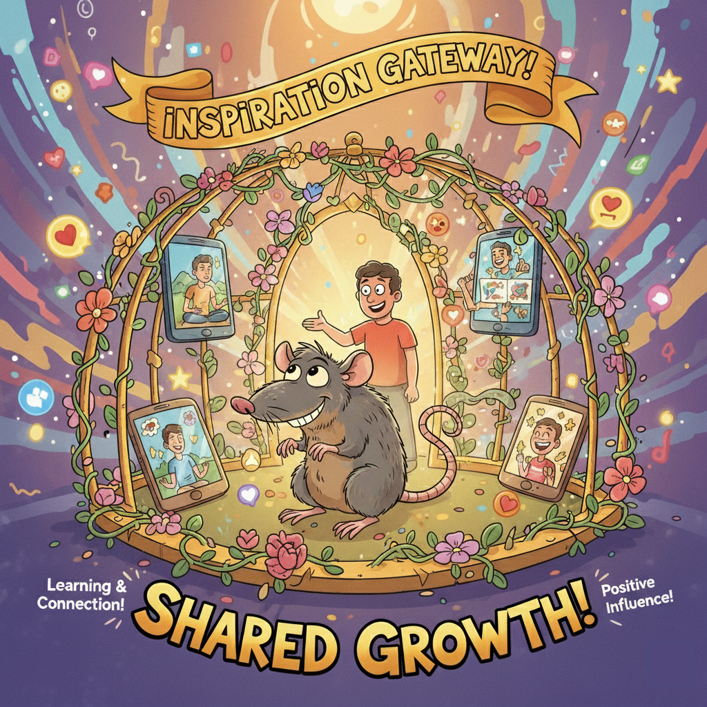
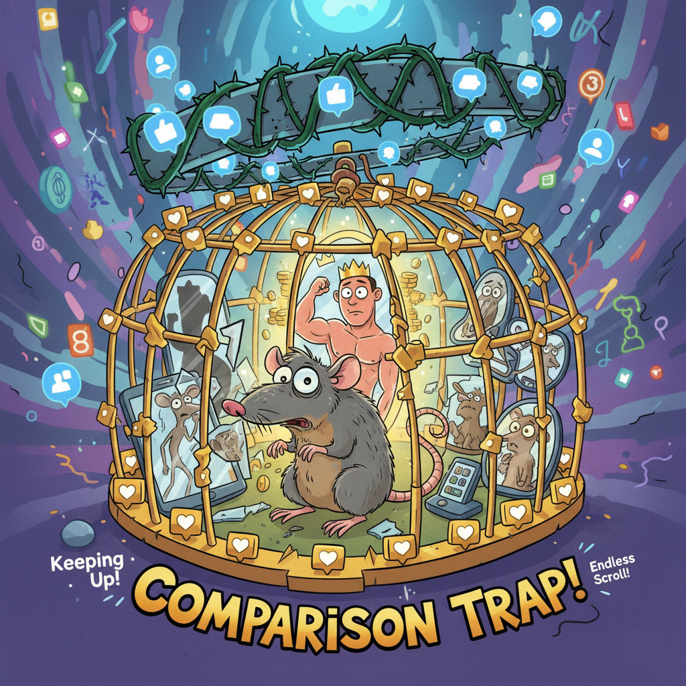

The Drive to Thrive: Comparison as a Motivator
-
Goal Setting & Ambition: Peer achievements ignite ambition, setting clear benchmarks.
"Friend's amazing internship pushed me to polish my resume and apply."
-
Performance Enhancement: Observing success inspires better habits and strategies.
"Classmate's high scores led me to ask about their techniques; it helped me improve."
-
Social Learning: Comparison guides efforts by understanding what's 'achievable.'
"Knowing peer involvement helps me gauge expectations and plan my activities."
-
Validation & Belonging: Favorable comparison reinforces competence and positive self-perception.
"Grades on par with successful peers make me feel capable and that I belong."
-
Inspiring Role Models: Successful peers serve as relatable role models.
"Senior's journey to top grad school motivates me, knowing it's possible."
-
Discovering Interests: Seeing peers try new things can expose you to new passions.
"I only joined the coding club after seeing my roommate's project; I love it now."

The Trap of Despair: Comparison as Misery
-
Anxiety & Stress: Constant measurement fuels worry about not being 'good enough.'
"Scrolling through LinkedIn makes me anxious; everyone else is ahead."
-
Lowered Self-Esteem: Perceived deficiencies erode self-confidence and foster inadequacy.
"Friends with perfect CGPAs make my efforts feel insufficient."
-
Envy & Isolation: Comparison breeds negative emotions, damaging connections.
"Hard to celebrate friends' successes when secretly wishing I had what they have."
-
Burnout & Exhaustion: Pressure to 'keep up' leads to unsustainable pace.
"Exhausted trying to match everyone's extracurriculars; always running on empty."
-
Mental Health Impact: Contributes to imposter syndrome and depression.
"Despite accomplishments, I feel I don't deserve to be here, comparing to 'smarter' people."
-
Decision Paralysis: Fear of making the 'wrong' choice compared to peers.
"I can't pick a major because I don't know which one 'looks' as good as my friends' choices."
The Amplifiers: How Context Shapes Comparison
-
Social Media: Curated realities create skewed comparisons, intensifying inadequacy.
"Everyone's travel photos make my student life feel boring and unproductive."
-
Peer Culture: Competitive campus culture amplifies both motivational and detrimental comparisons.
"Pressure to discuss grades after exams makes it hard to focus on my own learning."
-
Personal Disposition: Individual traits and coping mechanisms shape reactions to comparison.
"Some thrive on competition, others find it crippling; internal dialogue is key."
-
Institutional Pressure: Systems like grading curves or rankings force direct comparison.
"Being graded on a curve means I'm not just learning; I'm actively competing with friends."